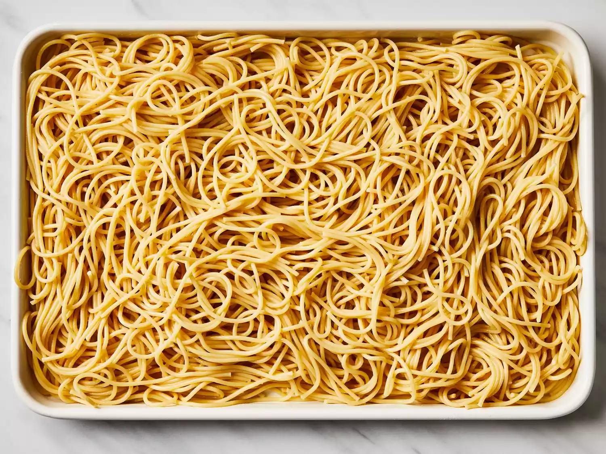
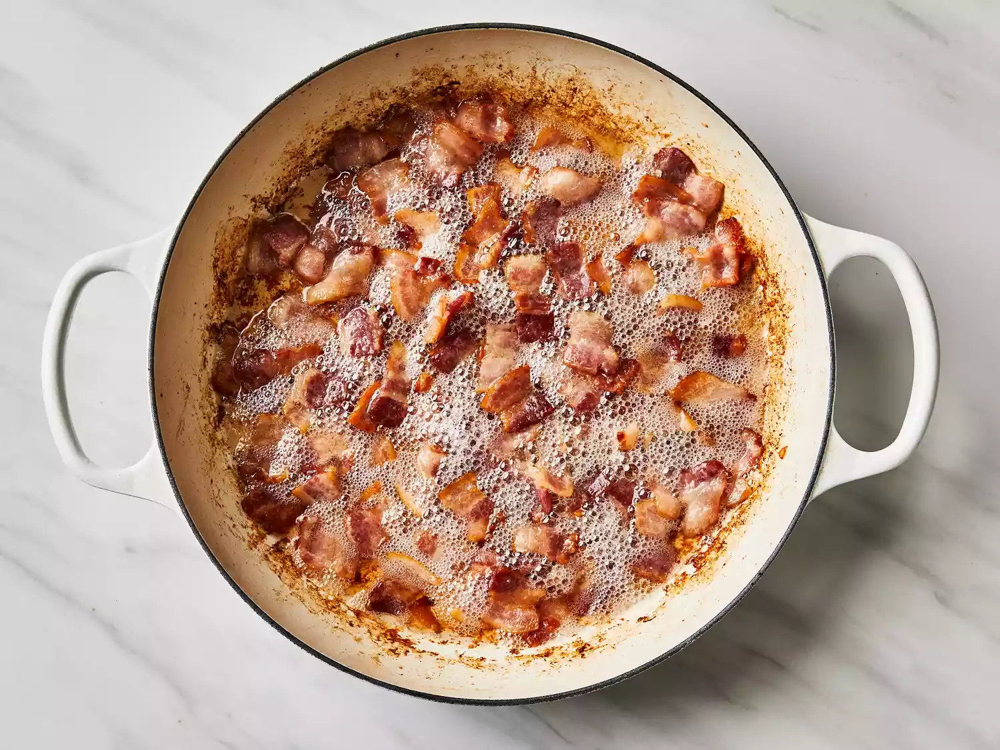
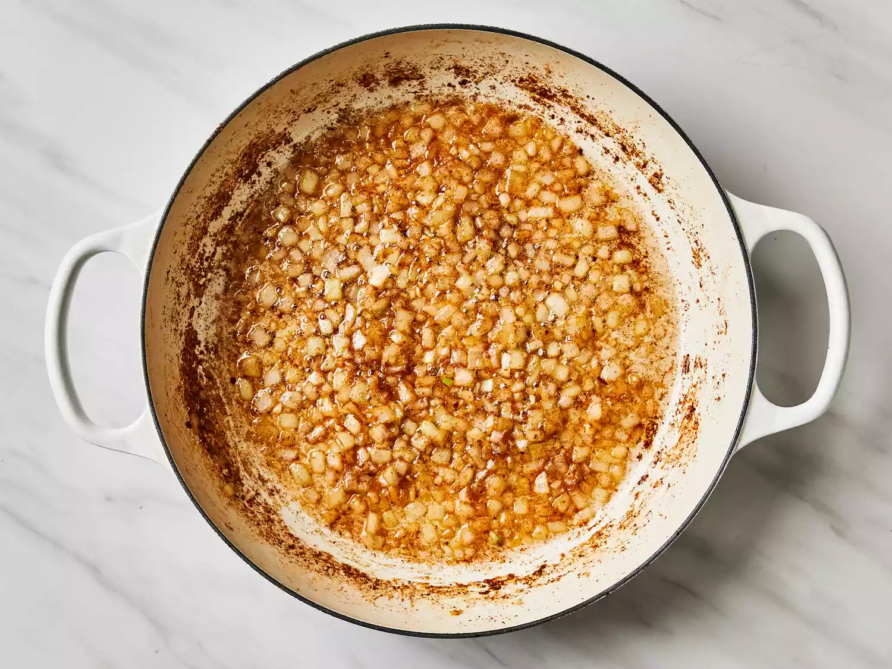

Spaghetti Carbonara

This spaghetti carbonara is a super rich "bacon and egg" pasta dish that's great to serve for company. This recipe also makes an unusual brunch offering.
Ingridients
Original recipe yields 8 servings
- 1 pound spaghetti
- 2 tablespoons olive oil, divided, or as needed
- 8 slices bacon, diced
- 1 onion, chopped
- 1 clove garlic, minced
- ¼ cup dry white wine
- 4 large eggs, beaten
- ½ cup grated Parmesan cheese
- salt and black pepper to taste
- 2 tablespoons chopped fresh parsley
- 2 tablespoons grated Parmesan cheese
Directions
- Bring a large pot of lightly salted water to a boil. Cook spaghetti in boiling water, stirring occasionally, until tender yet firm to the bite, about 12 minutes. Drain, toss spaghetti with 1 tablespoon olive oil, and set aside.

- Place diced bacon in a large skillet over medium heat; cook and stir until evenly browned, about 10 minutes. Drain bacon on paper towels, reserving 2 tablespoons bacon fat in the skillet.

- Add 1 tablespoon olive oil to bacon fat in the skillet. Add chopped onion and cook over medium heat until onion is translucent. Add minced garlic and cook until fragrant, about 1 minute. Add wine and cook 1 minute more.

- Return cooked bacon to the skillet; add cooked spaghetti. Toss to coat and heat through, adding more olive oil if it seems dry or sticks together. Add beaten eggs and cook, tossing constantly with tongs or a large fork, until eggs are barely set. Quickly add 1/2 cup Parmesan cheese and toss again. Season with salt and pepper (remember that bacon and Parmesan are very salty).

- Serve warm with chopped parsley sprinkled on top and extra Parmesan cheese at the table.
Nutrition Facts
Per serving
- 444 Calories
- 21g Fat
- 45g Carbs
- 16g Protein
Home page